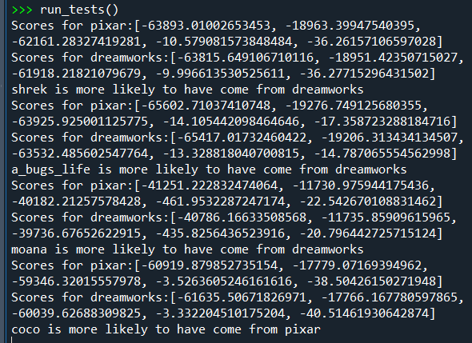

Play a game of Connect Four with an intelligent AI that assesses possible moves in order to make the best decision. You can even pit two AI players against each other.
Utilzing a mix of text models and functions that find distinctive similarities in features between differing bodies of text, I was able to create a semi-intelligent AI that is able to somewhat accurately distinguishes what source type a body of text is more likely to have came from.
I aim to provide customers with the best website design coupled with an efficient UI. Contact me for inquiries or see my GitHub for examples of my work.
Farouk Adeleke, Web Designer
© 2023 Farouk-Adeleke, Inc. All rights reserved.